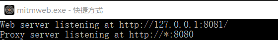
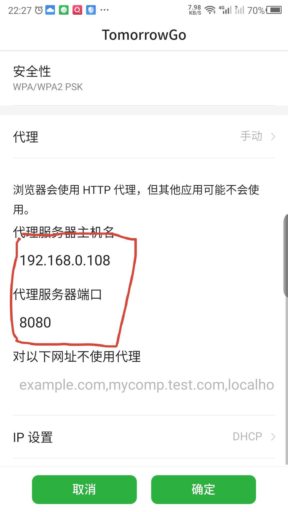

这个双休把毛姆的自传体小说《人性的枷锁》看完了，感觉这几天跟着作者去当时的欧洲游览了一番，见识了当时社会普通人民的日常生活和工作情况，仿佛自己也置身于他们其中一样，读完仍感觉意犹未尽。文中主人公的人生经历仿佛就是我们人生的缩影。对于将来的打算，他有着自己的想法，他想去追求自己认为是对的事，可是一旦认识到自己的选择未必是正确的时候他又会及时勇敢的调整方向，而不会在乎他人的看法，因为这才是正确的道路。年轻的时候他希望去外面见识游历一番，可是最后还是为了萨莉放弃了理想，经历过无尽的屈辱、悔恨，也经历过温馨和舒适，那些我们所苦苦追求的事情在某一天或许是错的，你对同一件事的看法可能经过时间的演变与之前的看法有很大的出入，我们学会了调整和适应，或许这就是成长吧，有时候你不知道该怎么走，那么多去经历一下总归是好的！
mitmproxy的简单使用
一、什么是抓包？怎么抓包？
1、抓包（packet capture）就是将网络传输发送与接收的数据包进行截获、重发、编辑、转存等操作，也用来检查网络安全。抓包也经常被用来进行数据截取等
2、一般常用的抓包软件优缺点如下:
（1）fiddler：免费，但是跨平台能力较差。在MAC上非常非常不好用。但是在windows上用起来感觉不错，重点是免费
（2）charles：跨平台不错，windows和mac上都能支持，遗憾的是这是一个收费软件。
（3）mitmproxy：跨平台能力不错、支持脚本扩展。是测试开发工程师常用的一款抓包工具，免费。只不过它是一个控制台的形式操作。
(4) wireshark是非常流行的网络封包分析软件，功能十分强大。可以截取各种网络封包，显示网络封包的详细信息，但是只能查看封包，而不能修改封包的内容，或者发送封包。使用wireshark的人必须了解网络协议，否则就看不懂wireshark了。wireshark能获取HTTP，也能获取HTTPS，但是不能解密HTTPS，所以wireshark看不懂HTTPS中的内容，如果是处理HTTP,HTTPS 还是用Fiddler, 其他协议比如TCP,UDP 就用wireshark.(使用介绍: https://www.cnblogs.com/cocowool/p/wireshark_tcp_http.html#1-wireshark%E4%BB%8B%E7%BB%8D)
二、mitmproxy介绍
1、Mitmproxy是一个免费的开源交互式的HTTP/HTTPS代理。
2、mitmproxy就是用于MITM的proxy，MITM即中间人攻击（Man-in-the-middle attack）。用于中间人攻击的代理首先会向正常的代理一样转发请求，保障服务端与客户端的通信，其次会看看请求或者响应结果信息，记录其截获的数据或篡改数据，引发服务端或客户端特定的行为。
3、不同于fiddler或wireshark等抓包工具，mitmproxy不仅可以截获请求帮助开发者查看，分析，更加可以通过自定义脚本进行二次开发（篡改信息重新发送）。
4、mitmproxy还有两个关联组件。一个是mitmdump，它是mitmproxy的命令行接口，利用它我们可以对接Python脚本，用Python实现监听后的处理。另一个是mitmweb，它是一个Web程序，通过它我们可以清楚观察mitmproxy捕获的请求。
三、mitmweb的使用
windows环境 确保电脑和手机连接的同一个wifi
1、打开mitmweb(直接双击mitmweb图标即可)
同时会自动在浏览器中打开监控的界面

2、配置手机wifi的代理
图中的主机名即为电脑所在的ip，端口即为上图中所看到的mitmweb监听的端口

拖延症
最近我发现我有很严重的拖延症或者说执行力太差了，今天看新闻说创业板涨的挺火的，然后我就想试下，然后一想我个星期的股票账户还没开。上个星期我看到有同事在微信上使用腾讯的微证券炒股很方便，然后我就像开一个，于是我就在微证券中按照流程一步步的开户，后面选证券公司的时候我就选的招商证券，然后资料提交后说我已经开过户了，只能立即绑定，要绑定的话就要登陆，但是我登陆时系统提示我账户被锁定了，然后我就打电话问客服怎么办，客服问我密码记不记得，我说不记得，原先开户时用的手机号还能用不，我说没用了，然后他说就只能去线下相关网点解决，或者说下载他们的app重新开一个户。但是他们的网点离我太远了，没空去整，然后我也不想就开个户而下个app，所以一直拖到今天。另一个事是之前我看到小米员工发布了一款防雨鞋套很漂亮，想买一双，然后我就下了个小米有品，准备在上面买，但是这上面买东西收十元运费，而我是第一次用，所以系统送十元钱，所以我就想着先等等，看还需要什么东西到时一起买，然后就一直拖到了今天。所以我感觉个执行力的问题很严重，我无非就是想开个户而已，但是现在卡住了，很可能拖着拖着就忘了，很多事也是这样的，你计划的很好，可是执行着执行着就没了。
情绪波动
刚刚在钉钉群里看到T交代我做的事，一下子我感觉就很不爽，有点愤愤不平，明显的感觉自己的情绪起来了。其实这件事不难，很简单，跟事件的本身没有关系，而是跟交代我做事的F有关。前端时间不久我们这小组的小组长换人了，就是T，我们俩也没啥过节，平时关系也都没啥问题。主要是之前我们关系都是平级的同事关系，现在他突然升上去了感觉有点不舒服，特别是在他给我交代任务的时候就特别不爽，然后沟通的时候自己说话可能就会有点冲，对他态度可能不大好。但是为啥我会对他升上去会感到不舒服呢？我觉得主要有两个原因吧：一个是没感觉他技术非常厉害，二是年龄跟我差不多，进公司时间也差不多，这两个应该是主要原因吧。虽然我知道自己这样做不好，要避免这样做，但是还是忍不住会感觉不爽，但是到底是什么原因在自己内心深处导致这种想法的产生呢，是心胸狭窄、没有气量、嫉妒吗，不确定。后面要尽量避免这种情绪吧
随想
今天下班感觉又进入了颓废的状态，晚上吃了饭后就看了会头条，然后就打王者荣耀，一直打到十二点，每次到周五时，脑海中总是会冒出来贪玩、享受的想法，不能像周一到周四一样进入学习的状态，不论是看专业的书还是非专业的都行，这几天再看《架构修炼之道》这本书，本来每天定的是最少看十页的，周一到周五除了实在有事之外基本做到了，但是今天却没有执行，看来还是要好好的锻炼下执行力，包括玩游戏一样，之前也都给自己玩游戏定下了规矩的，赢了就可以继续玩，输了当天就不能玩了。但是这个规矩感觉也好难，有时你输了被对方气到了，然后就又开了，所以说这个要落实贯彻下去也是需要强大的执行力的，希望后面在这里可以监督自己！
搭建免费个人博客
Hexo 是一个快速、简洁且高效的博客框架。Hexo 使用 Markdown（或其他渲染引擎）解析文章，在几秒内，即可利用靓丽的主题生成静态网页。我们将Hexo生产的静态网页托管在github，最 后利用travis持续集成部署
what
hexo
Hexo 是一个快速、简洁且高效的博客框架。Hexo 使用 Markdown（或其他渲染引擎）解析文章，在几秒内，即可利用靓丽的主题生成静态网页。
travis
Travis CI 是目前新兴的开源持续集成构建项目，它与 jenkins，GO 的很明显的特别在于采用 yaml 格式，同时它是在线的服务，不像 jenkins 需要你本地搭建服务器，简洁清新独树一帜，它和Github 集成的程度非常高，对于 Github 上的开源项目，可以免费在Travis上构建，而非开源的私有项目想在Travis上构建则需要付费。
how
确保node、git已经安装
1 | $ node -v |